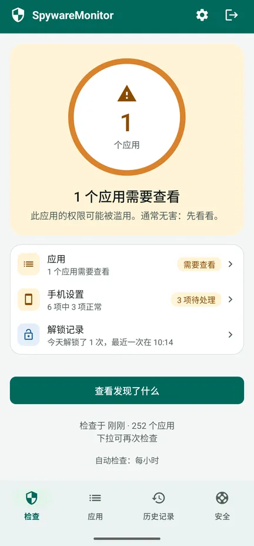
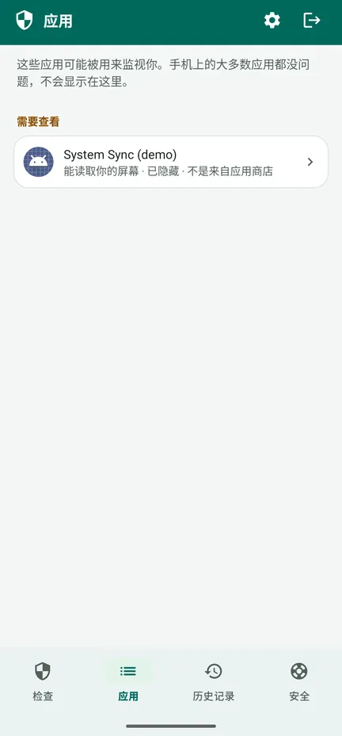
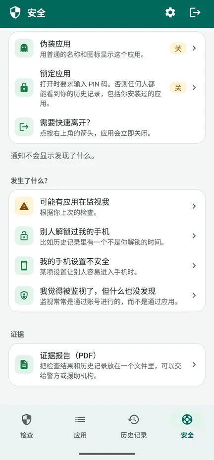
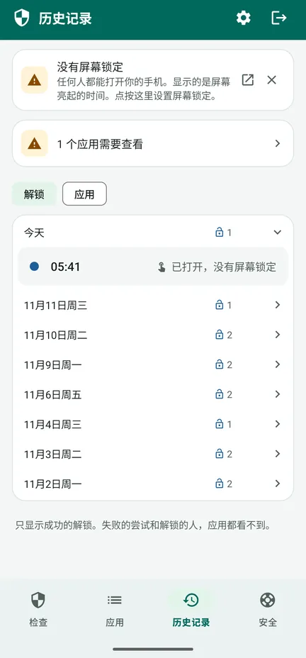

有人在监视你的手机吗？
SpywareMonitor 会检查你的安卓手机上哪些应用可能被用来监视你，并用简单易懂的话告诉你原因。
如果你担心伴侣、前任或其他人在偷偷通过手机跟踪你，这个应用就是为你准备的。不联网、无广告、不需要账号：一切只在你的手机上完成。
在 Google Play 上获取 一步一步看懂怎么用（英文）
在 Google Play 上免费下载，适用于 Android 8 及更高版本，可选一次性升级到 Pro。支持 10 种语言，包括简体中文。

已知的跟踪软件
按名称和签名证书识别 132 款跟踪软件。
隐藏的应用
没有图标的应用，或者名字装作是安卓系统一部分的应用。
能监视你的应用
能读取你的屏幕或通知，或者作为设备管理应用的应用。
手机设置
没有屏幕锁定、开着 USB 调试，或其他让别人容易进入手机的设置。
安全的下一步
告诉你该做什么，并按安全的顺序来，不会惊动对方。
数据不离开你的手机
没有联网权限：没有广告、没有跟踪、不需要账号。
看看实际效果
观看 83 秒的介绍视频（英文）：应用如何检查你的手机、橙色和红色是什么意思、接下来该怎么做。也可以直接看下面的截图。在 YouTube 上观看



免费：检查
- 检查每一个应用，并与已知跟踪软件列表比对
- 橙色：权限可能被滥用，通常无害，先看看再说。红色：已知的跟踪软件。
- 每个应用都写明原因，以及开发者是谁
- 手机设置：每一项都有按钮，点一下就能去修改
- “安全”标签页：针对你的情况，按安全的顺序列出步骤
- 快速退出：点按右上角的箭头，应用会立即关闭
Pro：一次付费，无需订阅
- 自动检查：打开一个开关，每天检查几次。通知从不显示发现了什么，只显示应用名称和“点按即可打开”，还可以延迟一小时再提醒。
- 解锁记录：查看手机何时被解锁，发现是否有别人用过
- 历史记录：哪个应用在什么时候被安装、获得了权限或被移除
- 证据报告（PDF）：使用应用的语言生成，可以交给警方或援助机构
- 伪装和锁定：把应用显示为笔记、天气、菜谱或日程，并用 PIN 码或指纹打开
免费版已经会记录你的历史。Google 的购买收据邮件和 Play 订单记录里会出现这个应用的名字。
删除任何东西之前
- 删除间谍软件可能会惊动安装它的人。请先考虑你的安全。
- 保留证据：证据报告、截图，或用另一部手机拍下的照片。
- 和你信任的人、警方或求助热线谈谈，最好用一部没有被监视的手机。大多数国家都有针对家庭暴力或虐待的免费求助热线。
- 用另一台设备修改重要的密码。
- 如果你正面临紧急危险，请拨打当地的紧急电话。
应用里的安全标签页会根据你的情况，一步步带你完成这些事。发现问题后该怎么做（英文）；另外，请先保护好这个应用本身（英文）：把它伪装起来，并用 PIN 码锁定。
详细信息
检查的全部内容
- 132 款已知跟踪软件（按名称和签名证书识别）
- 在应用列表中没有图标的应用
- 无障碍权限、通知使用权和设备管理
- 通过安装文件或其他来源安装、不是来自应用商店的应用
- 有风险的权限组合，比如后台位置信息加上麦克风和短信
- 屏幕锁定、USB 调试、开发者选项、被允许安装其他应用的应用、由别人管理的手机
- 手机被 Root 的迹象（只在发现时显示）
可以自己验证的隐私
SpywareMonitor 没有联网权限，所以它无法把任何东西发送到任何地方。它的数据不会进入云备份。已知跟踪软件列表内置在应用里，随应用一起更新。隐私政策（英文）。
坦诚说明局限
没有任何扫描工具能保证手机百分之百干净。工作资料中的应用，以及经过深度隐藏 Root 的手机上的间谍软件，任何普通应用都看不到。如果发现 Root 的迹象，SpywareMonitor 会告诉你。另外，即使没有任何应用，别人也可能通过账号跟踪你。
语言和手机
支持 10 种语言：简体中文、英语、挪威语、荷兰语、德语、法语、西班牙语、波兰语、印地语和阿拉伯语。适用于 Android 8 及更高版本。
常见问题
怎么知道我的安卓手机上有没有间谍软件？
留意你不认识的应用：在应用列表中被隐藏、能读取你的屏幕（无障碍）或通知、是设备管理应用，或者是通过安装文件而不是从 Play 商店安装的。SpywareMonitor 会检查以上所有情况，并把你的应用和 132 款已知跟踪软件的列表进行比对。
SpywareMonitor 会把我的数据发送出去吗？
不会。这个应用没有联网权限，所以任何东西都不可能离开你的手机。不需要账号，没有广告，也没有数据分析。
发现间谍软件后应该马上删除吗？
删除它可能会惊动安装它的人。请先考虑你的安全，保留证据，再和你信任的人、警方或求助热线谈谈，最好用一部没有被监视的手机。
SpywareMonitor 能发现所有间谍软件吗？
没有任何扫描工具能做出这样的保证。工作资料中的应用，以及已 Root 手机上的间谍软件，任何普通应用都看不到。SpywareMonitor 会如实告诉你这一点，并说明它能检查什么。
SpywareMonitor 免费吗？
检查、手机设置和安全步骤都是免费的。Pro 只需一次付费，无需订阅，增加了带低调通知的自动检查、历史记录、解锁记录、PDF 格式的证据报告，以及应用伪装和 PIN 码锁定。
我能把 SpywareMonitor 藏起来吗？
有了 Pro，你可以把应用伪装成笔记、天气、菜谱或日程，并用 PIN 码锁定。通知从不显示发现了什么。点按右上角的箭头，应用会立即关闭。不过，Google 的购买收据邮件和 Play 订单记录里会出现这个应用的名字。
我觉得被监视了，但什么也没发现，怎么办？
监视常常是通过账号进行的，而不是通过应用。在 Google 地图中停止位置信息分享，检查你的 Google 账号上登录了哪些设备，以及辅助邮箱和辅助手机号，再扫描一下有没有隐藏的追踪器。修改账号时请用另一台设备。
指南：安卓手机上的间谍软件
分步帮助（英文）
Nordic Appworks 的更多应用
UpdateMonitor — 记录手机上每一次应用更新、安装和移除，以及权限的变化。RebootMonitor — 查看手机上次重启是什么时候。和 SpywareMonitor 一样：不联网，没有广告。
联系我们
有问题或建议，请发邮件到：support@spywaremonitor.app
已知跟踪软件列表来自 Echap 的 stalkerware indicators，采用 CC BY 4.0 许可。